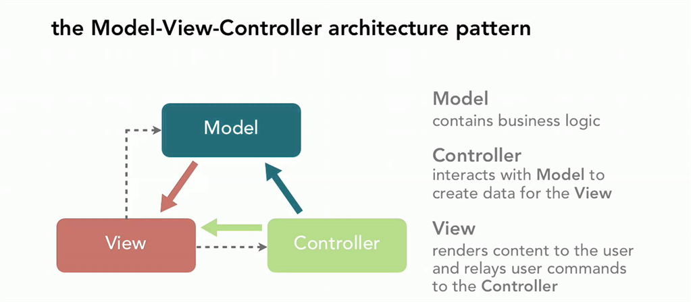

Laravel is a powerful MVC PHP framework, designed for developers who need a simple and elegant toolkit to create full-featured web applications. Laravel was created by Taylor Otwell.
Model-View-Controller Architecture

Why Laravel?
Resources
LaraCasts
Laravel News
Larajobs
Forge
Setting up Laravel
Composer
Application Structure
Routing
Request Types
GET - fetch a resource
POST - send data
PUT - edit a resource
DELETE - delete a resource
PATCH - partially edit a resource
OPTIONS - describe the communication
Routing
Blade templating
Laravel Blade
Blade is the simple, yet powerful templating engine provided with Laravel.
Does not restrict you from using plain PHP code in your views.